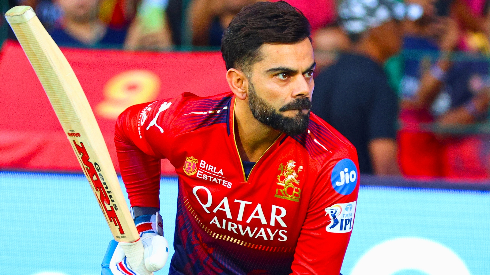

Virat Kohli
Virat Kohli (born 5 November 1988) is an Indian international cricketer who plays ODI
cricket for the national team and is a former captain in all formats. He is a right-handed batsman and
occasional right-arm medium pace bowler. Considered one of the greatest all-format batsmen in the
history of cricket, he is called the King, the Chase Master, and the Run Machine for his skills, records
and ability to lead his team to victory.